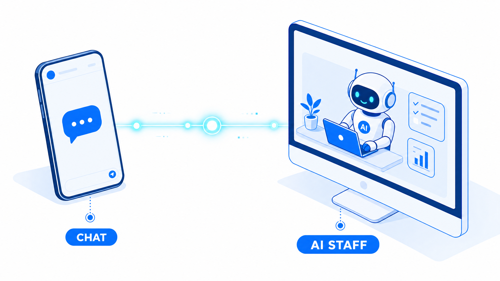
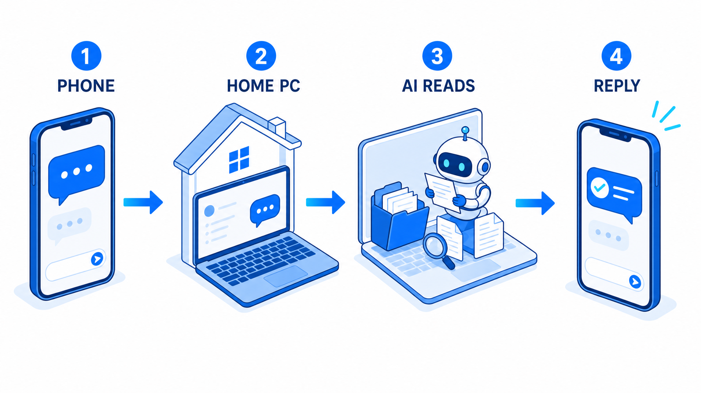
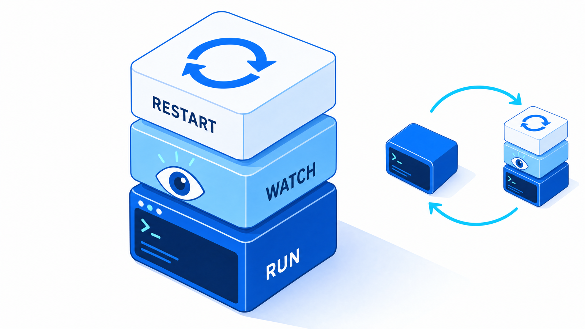
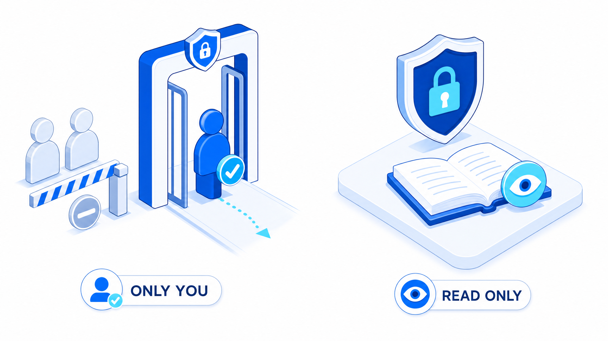

今回は動画のご視聴と、保存版資料のお受け取りをいただきありがとうございます。この資料では、動画でお話しした内容と、実際に手を動かすための手順・プロンプトをすべてまとめています。上から順番に進めれば、あなたのAI社員がDiscordの中で働きはじめます。

STEP 01
最初に、これから作るものの正体を1枚で掴みます。
AI社員は、Discordの中に住んでいて、あなたの代わりに働いてくれるAIです。スマホから話しかけると、家のパソコンの中で実際に手を動かして、仕事を終わらせて報告してきます。

文章で答えるだけでなく、ファイルを開いて、資料を作って、保存するところまでやってくれます。
会社のルールも過去の仕事も、全部覚えた状態で動いてくれます。答えが「一般論」で終わりません。
決めた時間になったら勝手に仕事をして、なんなら人間を催促してきます。
STEP 02
人間がやるのはここだけ。ほんとにアカウント登録レベルです。
先に言っておくと、人間がやるのはアカウントの準備だけで、設定は全部AIにやらせます。用意するのは次の3つです。
ProかMaxプランを契約します。一番安いProなら月20ドル、日本円だと3,000円ぐらいです（2026年8月時点）。無料プランではこの仕組みは動きません。
Claude 料金ページClaude Code（パソコンの上でAIに作業をさせるためのツール）のデスクトップアプリを入れて、Claudeのアカウントでログインしておきます。日本語で指示するだけで使えます。
Claude Code 公式Discord（LINEやSlackと同じ無料のチャットアプリ）を入れてログインし、自分のサーバーを1個作っておきます。サーバーはDiscordの中の「自分の部室」のようなものです。
ここまでできたら、人間の仕事はほぼ終わりです。ここから先の設定は、Claude Codeにプロンプトを貼っていくだけです。
STEP 03
動画で「上から順番にコピペするだけでOK」とお話しした、その現物です。
▶ セットアップ全体の流れを100秒で解説しています。見てから下のプロンプトを順番に貼ると迷いません。
AI社員のセットアップを、はじめから通しで解説します。人間がやるのはアカウントの準備だけ。設定は全部、AIにやらせます。
まず、人間が用意するのは3つだけです。Claudeの有料アカウント。Claude Codeのデスクトップアプリ。そして、Discordのアカウントです。
Discordでは、自分のサーバーを1個作っておいてください。サーバーは、Discordの中の、自分の部室のようなものです。「自分と友達のため」を選べば、1人でも作れます。
ここから先の設定は、Claude Codeにプロンプトを貼っていくだけです。保存版資料に置いてあるプロンプトを、上から順番にコピペしてください。
プロンプトを貼ると、AIのほうから質問がきます。OSは何ですか。どのサーバーで動かしますか。チャットで答えていくだけで、Botの作成から接続、動作テストまで、AIが走り切ってくれます。
1個だけ注意点があります。途中で出てくる、Botのトークンは、Botを動かすための合いことばで、パスワードと同じものです。人に見せない。画面に映さない。どこにも貼らない。これを徹底してください。
最後に、スマホのDiscordを開いて、自分のBotに「ハロー」と送ってみてください。返ってきたら、その瞬間が、あなたのAI社員の誕生です。
うまくいかないときは、資料の最後にある「つまずいたときの対処表」を見てください。最初から完璧を目指さなくて大丈夫です。まず70点で作って、使いながら育てていきましょう。
Botを作るときに英語の設定画面（Discord Developer Portal）が出てきますが、動画でお見せした通り、ここもAIが画面を操作して代わりに進めてくれます。
使うには「画面を操作できるAI」が必要です。ClaudeのコンピューターユースかChrome拡張（Claude in Chrome）を有効にして、ブラウザで下のページを開いてログインした状態にしてから、プロンプトを貼ってください。
Discord Developer PortalあなたはこのPCの画面を見て、マウスとキーボードを操作できるAIです。 これから Discord Bot の作成を、私の代わりに最後まで進めてください。 【私が先に済ませてあること】 - ブラウザで https://discord.com/developers/applications を開き、 自分のDiscordアカウントでログイン済みの状態にしてあります。 【手順】 1. スクリーンショットを撮り、Developer Portal が開いていることを確認する。 ログイン画面のままだったら、そこで止めて私に知らせる。 2. 右上の「New Application」を押す。名前を聞かれたら 「（ここにBotに付けたい名前を書く）」と入力し、規約にチェックして Create を押す。 3. 左メニューの「Bot」を開く。 4. 「PUBLIC BOT」のトグルを OFF にする。 （他人が自分のサーバーにこのBotを追加できないようにするため） 5. 下にスクロールし、「Privileged Gateway Intents」の中の 「MESSAGE CONTENT INTENT」を ON にする。 ここをオンにしないと、Botにはメッセージ本文が空で届く。 6. 画面下に「Save Changes」のバーが出るはずなので、必ず押す。 押したことをスクリーンショットで確認するまで次に進まない。 7. 左メニューの「OAuth2」→「URL Generator」を開く。 SCOPES で「bot」にチェックを入れる。 BOT PERMISSIONS では、次の8つだけにチェックを入れる: View Channels Send Messages Send Messages in Threads Read Message History Attach Files Add Reactions Manage Channels ← Bot自身に部屋を作らせるため Manage Roles ← 同上 ※ Administrator は絶対にチェックしない。 8. 一番下の GENERATED URL をコピーし、新しいタブで開く。 サーバーを選ぶ画面が出たら、そこで一度止めて 「どのサーバーに入れますか」と私に聞く。 私が答えたら、そのサーバーを選んで認証を完了させる。 9. Developer Portal の Bot タブに戻り、「Reset Token」を押す。 ★トークンが表示されても、絶対に読み上げない。 チャットにもファイルにもログにも書き出さない。 画面の「Copy」ボタンだけを押してクリップボードに入れ、 私には「トークンをクリップボードに入れました」とだけ伝える。 10. 最後に、次の3つを私に報告する: ・Botの名前 ・招待したサーバー名 ・Message Content Intent が ON になっているか 【絶対にやらないこと】 - パスワード、2段階認証コード、メールアドレスの入力 - トークンの値を画面の外へ書き出すこと - Administrator 権限を付けること - 私に確認せずにサーバーへ招待すること
Claude Codeを開いて、下のプロンプトをそのまま全部コピーして貼るだけです。書き換える場所はありません。AIのほうから質問がくるので（9個くらい）、チャットで答えていけば、Botとの接続・安全設定・動作テストまで走り切ってくれます。分からない項目は「わからない」と答えて大丈夫です。
あなたはこれから、私のパソコンで動くAI秘書を構築します。 ## 完成イメージ スマホのDiscordからDMを送ると、このパソコンで動いているあなた（Claude Code）が このフォルダの中身を見た状態で返事をする。パソコンを再起動しても勝手に復活する。 これを作ります。 ## 進め方のルール 1. まず下の「ヒアリング」を1回のメッセージでまとめて聞く。1問ずつ聞かない 2. 私が答えたら、実行計画を5行以内で見せて、私の「OK」をもらってから着手する 3. 各ステップの終わりに、やったことと結果を1〜2行で報告してから次へ進む 4. 私が答えられない項目は「わからない」と言うので、その時は推測で埋めずに 公式ドキュメントを調べて、根拠つきで提案してほしい 5. トークンやパスワードの値を、画面にもファイルにもログにも出さないこと 6. 私のパソコンの設定を変える操作の前には、何をどう変えるかを1行で先に言うこと ## ヒアリング（これを最初に1回で聞く） 1. 使っているOSは何か（macOS / Windows / Linux） 2. Claudeのプランは何か（Pro / Max / Team / Enterprise / 無料） 3. Discordのアカウントは持っているか 4. AI秘書に見せたいフォルダはどこか（絶対パス。分からなければ「今のフォルダ」でよい） 5. 常駐させたいか、それとも手動で起動する形でよいか 6. 権限はどこまで許すか（A: 読むだけ / B: 書き込みも許す / C: 迷っている） 7. 使いたいモデルの希望はあるか（軽さ優先 / 賢さ優先 / おまかせ） 8. すでにDiscordのボットを持っているか、新しく作るか 9. このパソコンは普段スリープするか、つけっぱなしか ## 実行手順 ### Step 0. 前提の確認（ここで止まる可能性がある。正直に報告すること） - `claude --version` を実行してバージョンを確認する。v2.1.80未満ならアップデートを案内して止まる - `bun --version` を実行する。無ければインストール手順を案内する - 認証の状態を確認する。ただし「ログイン済み」の表示は当てにならないので、 実際にログインし直すことを勧める判断材料として扱う - プランがTeam/Enterpriseの場合、管理者による有効化が必要な旨を伝える - 無料プランの場合、この構成は動かない旨を伝えて止まる **この段階で条件を満たしていない場合、先に進まずに「何が足りないか」を明確に報告すること。** ### Step 1. Discord側の設定を案内する 私が手で操作する部分なので、順番に番号をつけて指示してほしい。 特に、**メッセージの中身を読む設定（Message Content Intent）をオンにする**ことを 強調して伝えること。ここを忘れると、メッセージは届くのに中身が空になる。 ボットに必要な権限も、チェックすべき項目名をそのまま列挙すること。 ### Step 2. プラグインを導入する 公式のDiscordチャンネルプラグインを入れる。 インストール範囲は「ユーザー範囲」を選ぶよう案内する（どのフォルダでも使えるようにするため）。 マーケットプレイスが見つからないエラーが出た場合の対処も先回りして案内すること。 ### Step 3. トークンを設定する 公式のコマンドを使って設定する。 **トークンの値は絶対に画面に出さない。** 私が貼った値をそのまま復唱しないこと。 ### Step 4. 許可リストを閉じる（ここは飛ばさない） ペアリングをして、その直後に必ず許可リストの方針を「許可した人だけ」に変更する。 **ここを飛ばすと、他人が私のパソコンのAIに命令できる状態になる。** 設定後、実際に設定ファイルを読んで、許可リストが自分1人だけになっていることを確認して報告すること。 ### Step 5. 常駐させる（Step 0で「常駐したい」と答えた場合のみ） 以下の3段構えで作る。 **5-1. 本物のターミナルの中で動かす** Claude Codeの対話モードは、本物のターミナル（pty）がないと起動せず、 1回きりの実行モードに落ちて即終了する。 そのため出力をログファイルにリダイレクトしてはいけない。 tmux（またはOSに応じた同等の仕組み）を使ってptyを用意すること。 **5-2. 見張り役を置く** 15秒ごとに本体が生きているか確認し、消えていたら作り直すスクリプトを作る。 注意: セッション名の判定は**完全一致**にすること。 前方一致にすると、見張り役自身の名前にマッチして「生きている」と誤判定する。 さらに、起動画面を定期的に読んで、 認証切れを示すメッセージ（ログインを促す表示、トークンの期限切れ、認証エラー）を 検知したらDiscordに通知する処理を入れること。 **この通知は、ボットのトークンで直接Discord APIを叩いて送ること。** Claude側の認証が死んでいる時に通知するのが目的なので、 「AIに通知させる」設計にしてはいけない。 **5-3. パソコン起動時に自動で立ち上げる** OSに応じた自動起動の仕組みに登録する。 登録コマンドが私の設定で禁止されている場合は、私が手で1回実行する形に切り替えて、 そのコマンドをそのまま提示すること。 **5-4. 見張り役の多重起動対策** 見張り役が2つ以上動いた場合、後から起動した方は「控え」として待機し、 先に動いている方が死んだら自動で昇格する形にすること。 2つが同時に本体を作り直して、無駄な再起動を繰り返す事故を防ぐため。 ### Step 6. 会話を継続させる 会話のIDを1回だけ発行してファイルに保存し、起動のたびにそのIDで再開する形にする。 これをしないと、再起動のたびに会話がゼロからになる。 リセットしたい時の手順も、最後にまとめて教えること。 ### Step 7. 権限を絞る Step 0の回答に応じて設定する。 「迷っている」と答えた場合は、**読み取り専用を強く推奨すること。** 理由も添えること: 外から届いたメッセージをそのままセッションに流し込む仕組みなので、 権限を絞っておくと、最悪のケースでも被害の上限が決まる。 また、無人で動く常駐では「確認ダイアログで固まる」ことが事実上の停止と同じになるため、 確認が出ないモードを選ぶこと自体が設計条件になる、という点も説明すること。 ### Step 8. 壊して確かめる（ここまでやって完了） 「たぶん動く」で終わらせない。以下を実際に実行して、結果を表で報告すること。 - 本体をわざと終了させて、再起動するか - セッションを強制的に消して、見張り役が作り直すか - 見張り役を2つ起動して、本体が増殖しないか - 本番の見張り役を終了させて、控えが昇格するか（本体は止まらないこと） - 実際にDiscordからDMを送って、セッションに到達するか **通らなかった項目は「通らなかった」とそのまま書くこと。** 成功したことにしない。 ### Step 9. 状態確認コマンドを用意する 私が困った時に1つ打てば全部分かるスクリプトを作る。 以下を1画面で表示すること。 - 見張り役が動いているか - 本体が動いているか - Discordとの接続が生きているか - 自動起動が登録されているか - 直近のログの最後の数行 - 認証が切れていないか **表示は日本語で、記号（OK / NG）で一目で分かる形にすること。** ### Step 10. 引き継ぎメモを書く 作ったものの一覧、使い方、止め方、再開の仕方、困った時の対処を 1つのMarkdownファイルにまとめる。 3ヶ月後の私が読んで分かる粒度で書くこと。 ## 絶対にやらないこと - トークン・パスワード・認証情報の値を画面やログやファイル本文に出す - 許可リストを開いたまま（誰でもDMできる状態で）完了とする - 出力をログファイルにリダイレクトする（Claude Codeが即終了する） - セッション名の判定を前方一致にする - 検証していないことを「動きました」と報告する - 私の全セッションの既定設定を、私に断らずに変更する - 私に同じことを2回聞く ## 完了条件 以下が全部埋まって初めて「完了」と報告すること。 - [ ] 前提（プラン・バージョン・Bun・認証）を実際に確認した - [ ] Discordのボットが自分のサーバーにいる - [ ] 許可リストが自分1人だけになっていることを、ファイルを読んで確認した - [ ] 権限モードを設定した - [ ] （常駐する場合）3段構えが動いていて、壊して確かめた結果を表で報告した - [ ] 会話が継続する設定になっている - [ ] 状態確認コマンドが動く - [ ] 引き継ぎメモを書いた - [ ] 実際にDiscordからDMを送って、返事が返ってきた
返ってきたら、その瞬間があなたのAI社員の誕生です。
報告が届くチャンネル（Discordの中の部屋）も、人間が作る必要はありません。できあがったAI社員に「通知用のチャンネルを作って、テスト投稿までして」と頼めば、自分で部屋を作ってくれます。
STEP 04
いまのAI社員は入社したばかりの新入社員。何を任せるかも、AIに決めさせます。
次にやるのは「何の仕事を任せるか決めること」と「その仕事に必要な会社の情報を渡すこと」の2つです。これも自分ではやりません。AI社員にこう頼みます。
私の業務内容をヒアリングして、AI社員に任せられる業務と、私にしかできない業務に仕分けてください。
AIのほうから「どんな事業をしていますか」「毎日やっている作業は何ですか」のように質問がくるので、チャットで答えていくだけで仕事の一覧表ができあがります。
毎回同じ形でやる仕事、情報を集めてまとめる仕事はAI向きです。
商談・撮影のような、生身の自分がいる仕事は人間の担当です。
この仕事をAI社員に任せるのに、必要な情報は何ですか？ 私が用意すべきものをリストで教えてください。
商品の情報、過去の発信など、必要なものをAIが指定してくるので、あとはそれをClaude Codeに見せているフォルダに入れていくだけです。
この情報がない状態だと、AIの答えは一般論ばかりになります。情報が入っていると、自分の事業に合わせて動いてくれるようになります。新入社員に会社の情報を教えて、即戦力にするようなものです。
STEP 05
スキルはAIに覚えさせる作業の手順書。でも、手順書は書きません。
スキル（AIに覚えさせる作業の手順書のようなもの）を一度入れておくと、毎回説明しなくても同じ品質で動いてくれます。作り方は、手順書を書くのではなく「一度一緒にやって、覚えさせる」です。
いい感じになるまで、チャットで普通に直しを頼みます。
これまでのやり取りを全部参照して、このタスクをスキル化してください。
これだけです。「スキルクリエイター」というスキルを作るためのスキルがClaude Codeのデスクトップアプリに最初から入っているので、書き方を覚える必要はありません。
次からは「いつものリサーチやって」の一言で、さっき直したところまで含めて、同じ品質で仕上げてくれます。
スキルの最後に「結果をDiscordに送る」を入れておくと、その仕事が終わるたびにスマホへ報告が飛んでくるようになります。動画でお見せした、進捗管理シートを見てリマインドを送ってくる仕組みも、実はこの形でスキルとして覚えさせてあります。
STEP 06
ここまでのAI社員は「話しかけたら動く」状態。最後に「話しかけなくても動く」ようにします。
やり方は簡単で、AI社員にこう頼むだけです。オートメーション（時間が来たらAIが勝手に動く仕組み）の登録から、その場でのテスト実行まで、AIが確認してくれます。
毎朝8時に、今日やることリストをまとめてDiscordに送ってください。 登録したら、時刻を待たずに「今すぐ1回だけ手動実行」して、 実際にDiscordに届くところまで確認してください。 届かなければ原因を切り分けて直してください。 最後に、次回いつ実行されるかを教えてください。
朝8時出勤にしたら、絶対に8時に出勤してくれる社員です。他にも、毎晩その日のDiscordのやり取りをまとめて進捗レポートを送らせることもできます。

STEP 07
便利な反面、頼んでもいない業務を勝手にやられたら怖い。だから守り方を決めておきます。

STEP 08
先に知っておくと早いです。困ったらここに戻ってきてください。
| 症状 | 原因 | 対処 |
|---|---|---|
| メッセージは届くのに中身が空 | Message Content Intentがオフ | Discord Developer Portalでオンにする |
| Botが何も返事しない | Claude Codeがチャンネル有効の状態で起動していない | チャンネルを有効にして起動し直す |
| 起動した瞬間に終了する | 出力をログファイルにリダイレクトしている | リダイレクトをやめて、本物のターミナルの中で動かす |
| 見張り役が本体を作り直さない | セッション名の判定が前方一致 | 完全一致にする |
| 「入力中…」のまま返事が来ない | claudeコマンドの認証切れ | ターミナルで1回ログインし直す |
| 毎回「はじめまして」から始まる | 会話のIDが固定されていない | IDを発行して保存し、起動時に再開させる |
| 外出中に返事が来ない | パソコンがスリープしている | スリープしない設定にする |
この資料の手順で、あなたのAI社員はもう働きはじめられます。さらに深く学びたい方へ、公式LINEから参加できる「AI×SNS攻略 月額0円コミュニティ」（LINEオープンチャット）をご用意しています。追加12大特典に加えて、最新のAI×マーケティング情報を僕がキャッチアップして配信しています。
コミュニティでは、累計3,000名以上が参加した『AI駆動型コンテンツビジネス 0→100完全攻略セミナー』にも完全無料でご招待しています。参加で豪華20大特典がもらえてしまうので、ぜひこちらもご活用ください。
※ オープンチャットへの参加案内は、公式LINEのトークに届きます。
星川ユウヤ